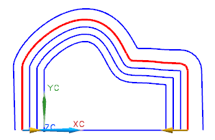

选择编辑→曲线→参数。
选择最外面一组偏置曲线上的任意位置。
整组曲线都被选定，并且出现偏置曲线 对话框，另外，父项曲线也高亮显示。

您也可以通过选择编辑→特征→编辑参数来显示对话框，然后在图形窗口中选择偏置曲线，或从特征选择对话框中选择偏置曲线特征。
在偏置曲线对话框的类型列表中，选择距离。
在距离输入框中，键入12。
点击确定两次。
偏置曲线将发生变化，现在偏置曲线是从原始曲线的固定距离偏置曲线。
关闭所有部件。